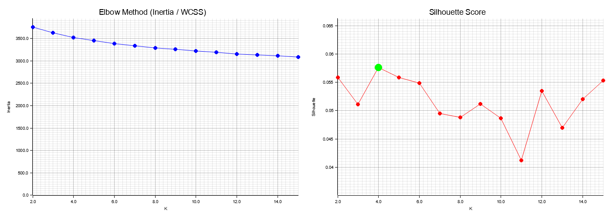
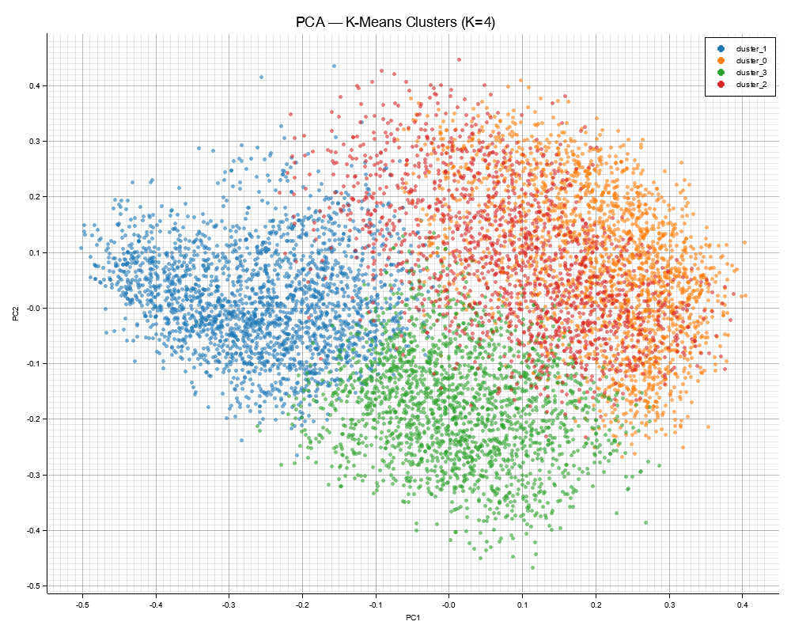

1. Metodologia
Dataset & Amostragem
- 22.258 imagens pessoais (fotos, wallpapers, AI art, screenshots, memes)
- Amostra aleatoria: n = 8.000
- 63 corrompidas descartadas (0.79%)
Feature Extraction
- CLIP ViT-B/32 [1] via fastembed-rs (ONNX)
- Embedding: x ∈ ℝ512 por imagem
- Pre-proc interno: resize 224×224, ImageNet norm
Normalizacao L2
\hat{\mathbf{x}}_i = \frac{\mathbf{x}_i}{\|\mathbf{x}_i\|_2}
dist. euclidiana ≈ similaridade cosseno
Clustering
- K-Means [2]
- K ∈ {2, ..., 15}, 3 runs/K, melhor por WCSS
- Convergencia: max 100 iter ou estabilizacao
2. Determinacao do K Otimo
Elbow Method (WCSS)
\text{WCSS} = \sum_{k=1}^{K} \sum_{\mathbf{x}_i \in C_k} \|\mathbf{x}_i - \boldsymbol{\mu}_k\|^2
Within-Cluster Sum of Squares
Silhouette Score [3]
s(i) = \frac{b(i) - a(i)}{\max\{a(i),\, b(i)\}}
a(i) = coesao intra-cluster, b(i) = separacao inter-cluster
- Best K = 4 (silhouette = 0.0576)
- Scores ~0.05: esperado para embeddings 512D heterogeneos
- Cotovelo sutil em K=4 confirmado pelo silhouette

| K | Inercia | Silhouette |
|---|---|---|
| 2 | 3753.7 | 0.0559 |
| 3 | 3627.7 | 0.0511 |
| 4 | 3520.9 | 0.0576 |
| 5 | 3454.1 | 0.0558 |
| 8 | 3290.3 | 0.0488 |
| 15 | 3087.1 | 0.0554 |
3. Analise dos Clusters (K=4)

PCA 2D — colorido por cluster

PCA 2D — colorido por pasta de origem
| Cluster | N | % | Descricao | Top Folders | Orientacao | Tam. Med. |
|---|---|---|---|---|---|---|
| 0 | 2125 | 26.6 | Arte digital | wallpapers 35%, ai_images 32% | 43% sq, 46% land | 413 KB |
| 1 | 2301 | 28.8 | Retratos/pessoas | people 50%, iPhone 33% | 75% portrait | 5.9 MB |
| 2 | 1602 | 20.0 | Screenshots | iPhone 57%, backup 28% | 55% port, 36% land | 241 KB |
| 3 | 1972 | 24.6 | Cenas/ambientes | iPhone 81%, people 8% | 70% portrait | 8.5 MB |
Insight: CLIP agrupou por semantica visual, nao por metadados. Fotos de iPhone aparecem nos 4 clusters. Formato (.png/.jpg) distribuido uniformemente.
3b. Validacao Cruzada com Metadados

Tipo de arquivo (.png / .jpg)

Tamanho do arquivo (gradiente azul→vermelho)

Orientacao (landscape / portrait / square)
Observacoes
- Extensao: .png e .jpg misturados → formato nao influencia clusters
- Tamanho: correlacao parcial → screenshots menores, fotos maiores (consequencia, nao causa)
- Aspect ratio: forte correlacao semantica → retratos = portrait, wallpapers = landscape
Limitacoes
- Silhouette ~0.05 (clusters nao perfeitamente separados)
- PCA 2D perde info de 512D
- K-Means assume clusters esfericos
[1] Radford, A. et al. Learning Transferable Visual Models From Natural Language Supervision. ICML, 2021.
[2] MacQueen, J. Some methods for classification and analysis of multivariate observations. Berkeley Symp., 1967.
[3] Rousseeuw, P. Silhouettes: A graphical aid to the interpretation and validation of cluster analysis. J. Comput. Appl. Math., 1987.
[2] MacQueen, J. Some methods for classification and analysis of multivariate observations. Berkeley Symp., 1967.
[3] Rousseeuw, P. Silhouettes: A graphical aid to the interpretation and validation of cluster analysis. J. Comput. Appl. Math., 1987.